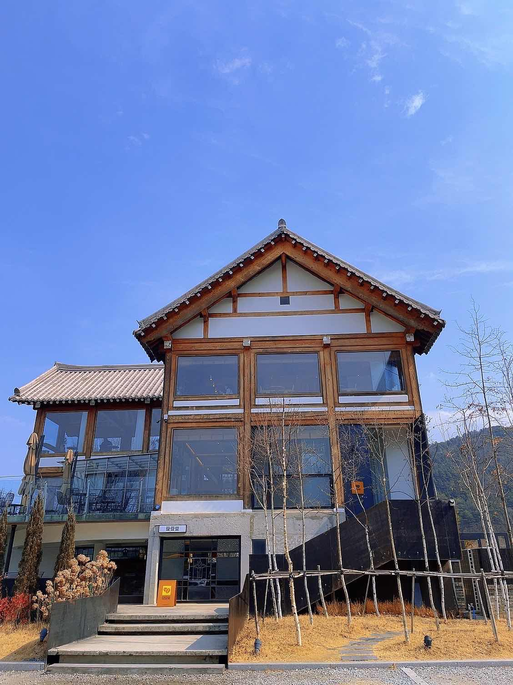
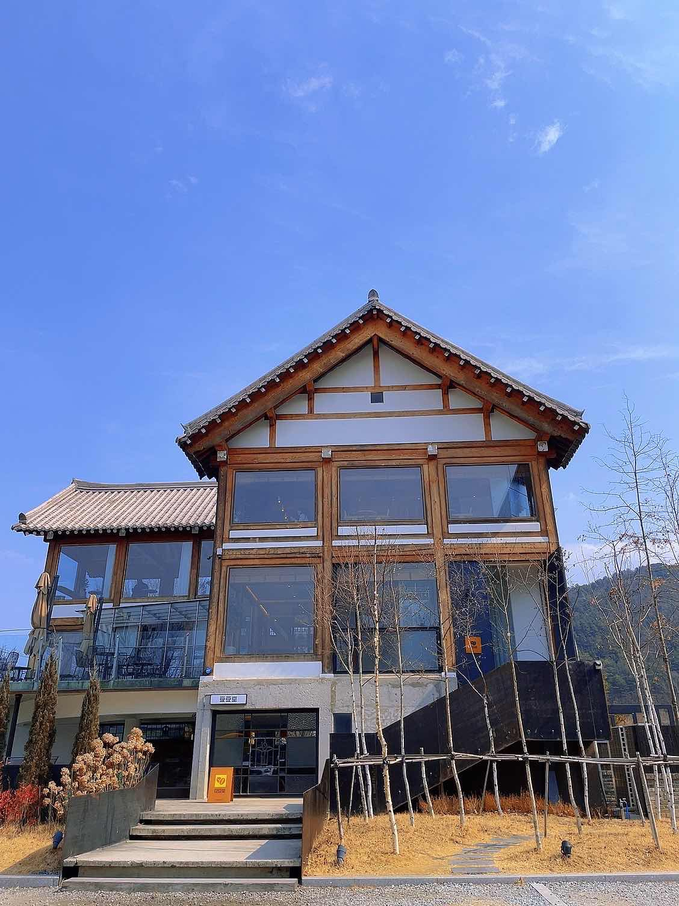

파쿠파쿠
2022.09.01
(1.5)
맛있는 장어 덮밥집
예약을 하고 가지 않아서 도착하여 웨이팅을 걸고 조금 기다려서 식사를 하였습니다.
매장이 넓어서 회전은 금방 금방 되었습니다. 방이 여러곳에 있는 것 같은데 제가 들어간 곳은 얼추 8팀 정도가 앉을 수 있었습니다.
가격이 조금 나가는 대표 메뉴인 히쯔마부시를 시켰습니다.
계란 푸딩이 빈속을 살짝 풀어주고, 단짠단짠한 장어 덮밥과 김과 밥을 같이 먹으니 맛있었습니다.
조금 먹다가 옆에 있는 보온통의 오차즈케 육수를 넣어 먹으니 더 맛있었습니다. 약간 짭짤한 육수였는데 느끼함도 좀 줄고 풍미가 더 올라가는 느낌이였습니다.
조금 오늘은 가격이 나가는 장어덮밥이 땡긴다 할때 가기 좋을 거 같습니다 ㅎㅎ

 
